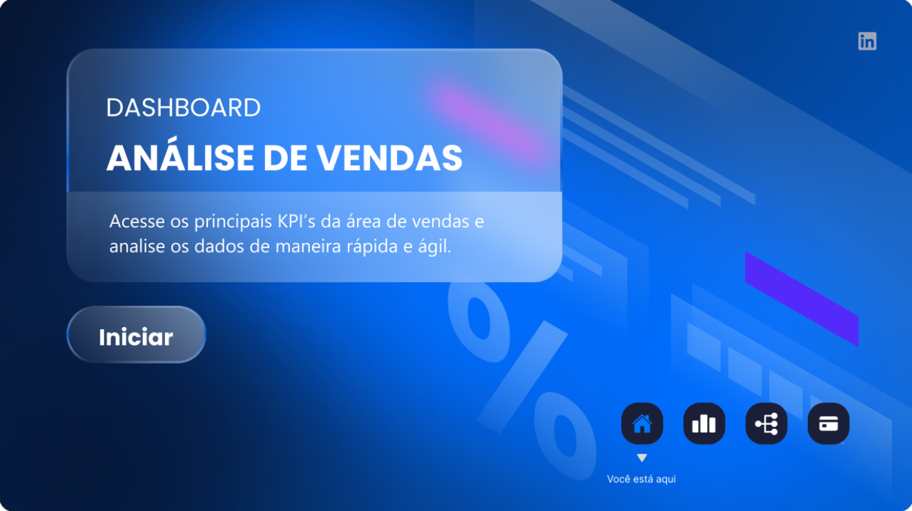
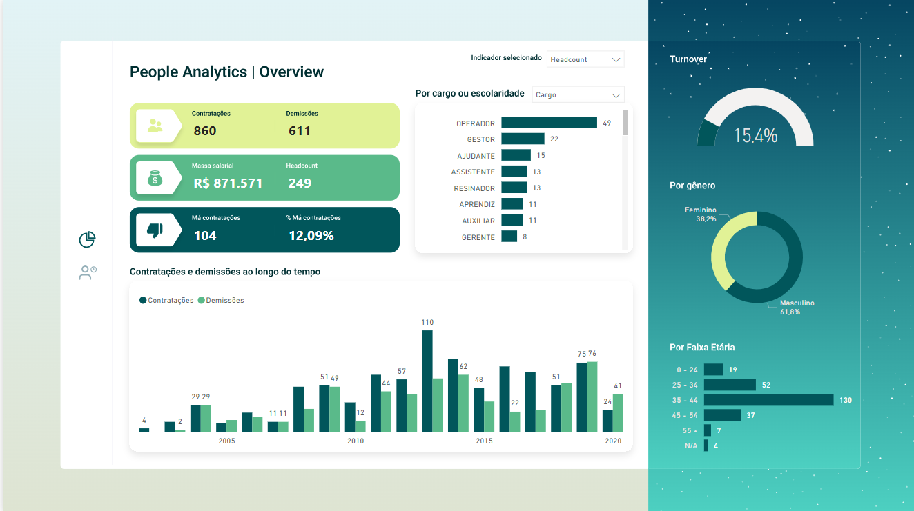

Experiências Profissionais
Projetos completos de Power BI
Dashboards operacionais de produção, pagamentos e eficiência de grandes clientes como Santander, Bradesco, Ativos SA, Return, Riachuelo, Porto Seguro, Sem Parar, Carrefour, Atacadão e Sicoob.
Dashboard People Analytics com indicadores de TO, ABS, Headcount, demissões, contratações, massa salarial, quadrantes e Heatmap.
Dashboard de ações digitais e funil de resultados com os indicadores de envios, entregas, cliques, acessos, cadastros, conversões,pagamentos e ROI.
Análise dos indicadores de Callcenter: discagem, SPIN, Alô, CPC, Conversão e Efetividade na Cobrança Ativa e Receptiva;
.
2+ anos como Gerente de Planejamento
Planejamento das ações e estratégias de cobrança, discagem, envios de SMS, WhatsApp e Email.
Gestão de equipe de analistas de Control Desk, MIS e Planejamento.
Reuniões com apresentação de resultados para os diretores e superintendentes.
Gestão do orçamento para ações de cobrança.
.
6+ anos como Gerente de Escritório de Cobrança
Responsável pela gestão operacional e estratégica de um escritório de cobrança amigável que realizava as negociações de grandes bancos e securitizadoras como Bradesco, Bradesco Cartões, Ativos S.A, Sicoob e Banrisul.
Reuniões com apresentação de resultados para os clientes.
Planejamento das ações e estratégias de cobrança, discagem, envios de SMS, WhatsApp e Email.
2+ anos como Gerente Comercial
Responsável pela gestão das compras de todos os setores da rede de Supermercados com uma equipe de 5 compradores. Atendimento aos fornecedores das grandes negociações para ofertas e promoções da rede.
6+ anos como Gerente de Supermercado
Responsável pela gestão de uma das lojas de uma rede de Supermercados.
Atendimentos aos clientes externos, internos e fornecedores.
Gestão dos líderes de setores.
Gestão de custos e resultados operacionais.
.
Projetos em Power BI com bases públicas

Dashboard de Vendas
Eu usei Power BI, Power Query, técnicas de ETL, contabilidade e análise de dados para construção de um dashboard de vendas com indicadores de Faturamento, Margem Bruta e Quantidade vendida analisados por produtos, vendedores e anual comparados com o ano anterior. Além dessas, também fiz as análises de Decomposição e principais influenciadores que fazem as vendas aumentarem ou diminuírem com uso de inteligência artificial.
As ferramentas utilizadas foram:
- SQL Server.
- Power Query.
- Power BI.
- Linguagem Dax.
- Microsoft Fabric.

Dashboard Financeiro
Projeto para o setor Financeiro, com as ferramentas Power BI, Power Query, técnicas de ETL, contabilidade e análise financeira para construção de um dashboard financeiro com indicadores de Receita, Custo, Despesa e Lucro analisados, cliente, tipo de custo, tipo de despesa, mês e por ano.
As ferramentas utilizadas foram:
- Redshift.
- Power Query.
- Power BI.
- Linguagem Dax.
- Microsoft Fabric.

Dashboard People Analytics
Nesse projeto eu usei Power BI, Power Query, técnicas de ETL, contabilidade e análise de RH para construção de um dashboard com indicadores HeadCount, Absenteísmo, Horas extras, Turn over, Contratações e Demissões podendo ser analisados por faixa etária, gênero, cargo, escolaridade e ao longo do tempo.
As ferramentas utilizadas foram:
- TOTVS Protheus.
- Power Query.
- Power BI.
- Linguagem Dax.
- Microsoft Fabric.

Dashboard SAC
Dashboard com os indicadores de atendimento de um SAC com análises de SLAs atendidos, em aberto e extrapolados, segmentados por tempo, tipo de problema, status, usuário e comparados com períodos anteriores.
As ferramentas utilizadas foram:
- SQL Server.
- Power Query.
- Power BI.
- Linguagem Dax.
- Microsoft Fabric.
Sinta-se à vontade para entrar em contato.